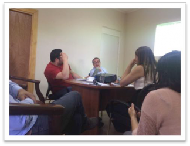

Acta de Reunión # 4

Imágenes de la reunión Fecha: 20, octubre del 2016

Asunto: Entrega de versión demo de la Aplicación (remota, vía Skype)
Participantes:
Cristian López, Gobernador
Carolina Vásquez, Jefa Gabinete
Cristian Cortés, Jefe Modernizacion
Ricardo Coloma, E. Gestión Territorial
Anibal Contreras, Jefe Proyecto MCI
Objetivo de la reunión:
Presentar maqueta funcional para lograr la validación y aceptación del diseño final antes de construir una versión demo de la plataforma.
Temas tratados:
Se presentó maqueta gráfica de la aplicación con los componentes y secciones posibles a considerar en CooperaNet con ejemplos de pantallas para el usuario final.
Acuerdos:
El equipo de la Gobernación refinará en un listado de Tipos de incidentes y sus categorías padres.
El equipo de la Gobernación define la grafica de la aplicación, colores, logos, tipografías.

www.MiCiudadInteligente.com | contacto@miciudadinteligente.com | +56968554901